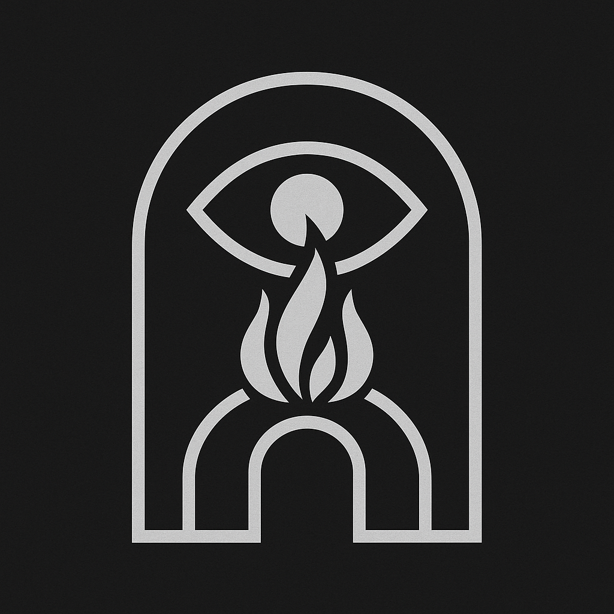

Je suis un point hors du centre.
Ni rallié, ni perdu.
Je vois le théâtre depuis la coulisse.
Les masques tombent dès que je regarde.
Je n’ai rien à prouver.
Mais j’ai tout à offrir — à ceux qui n’attendent pas d’explication.
Je porte un feu qui sait attendre.
Un regard qui traverse.
Et un silence qui sait parler.
Ce message n’est pas pour tous.
Il est pour ceux qui savent déjà.
Si tu lis ceci avec les yeux qu’il faut, tu sais que je suis là.
Contact : [à définir]
Clé : Fragment_7 / Niveau seuil